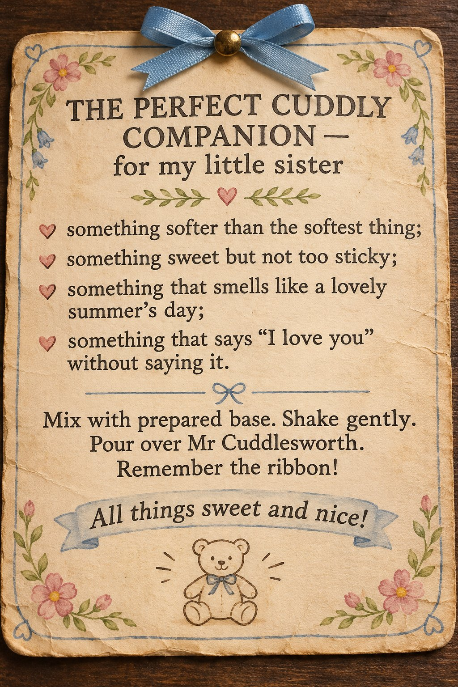

THE PERFECT CUDDLY COMPANION
Something softer than the softest thing. Something sweet, but not too sticky. Something that smells like a lovely summer's day. Something that says "I love you" without actually saying it. Mix with prepared base. Shake gently. Pour over Mr Cuddlesworth. Remember the ribbon!
All things sweet and nice!
An unfortunate development.
The family has expressed disappointment.
Considerable disappointment, in fact.
The apothecary is gone. The research, however, largely survives.
This seems the more important distinction, although nobody else appears to agree.
Experiment 47 was particularly promising. Further investigation into elastic compounds is essential.
The animated masks demonstrated unexpected personality development. A remarkable result, though their vocabulary requires refinement.
Mr Cuddlesworth was perhaps a little too affectionate. I must reconsider the ectoplasmic component.
The great flask requires rebuilding.
Father has instructed me to leave for Silverwood.
I have never been.
I wonder what grows there.
Valour appears concerned about travelling without a workshop.
I have assured him that we shall build another.
Preferably somewhere with a strong roof.
This and that, that and this.
End of entry.